When you think of building Optical Character Recognition (OCR) today,
you probably think of using powerful libraries like Tesseract or massive
neural networks trained on millions of images.
But, How were people doing it in 90s before CNNs were famous?
In this blog, I am going to share my experience on writing OCR
from scratch without using any neural networks or libraries.
We'll build a fully functional OCR from scratch in Julia,
starting with the simple concepts of "expanding" and "shrinking" shapes,
and see just how far these basic principles can take us.
Introduction
I was reading about Binary Image Processing and geometric properties like area, centroid, orientation, etc.. I was curious about where these properties were used. So, I looked online about some resources on Binary Image Processing and stumbled upon a book called Machine Vision from 1995 and was fascinated by how we can just use pure math concepts to do OCR. The book teaches about a intuitive field called Mathematical Morphology, which relies not on learning, but on pure geometry.
Mathematical Morphology
Mathematical Morphology(MM) is a tool for extracting image components that are useful for representation and description. With MM, we can extract boundary of objects, their skeletons and convex hulls. At its core, morphology is about probing an image with a small, predefined shape called a Structuring Element (SE). By analyzing how this SE interacts with the shapes in our image, we can perform powerful transformations. There are two basic morphological operations: Dilation and Erosion.
Consider this image, which we will use in our examples.
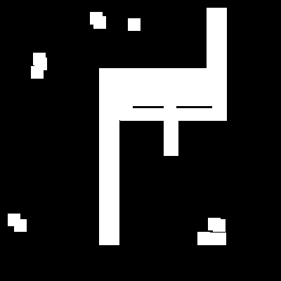
Dilation
Imagine the white pixels in our image are dots of wet ink.
Dilation is the process of taking our Structuring Element
and pressing it down, centered on every single ink dot.
The final image is the union of all the ink marks we've left.
This makes the original shapes bigger, or dilates them.
Mathematicallly, Dilation of the object A by the structuring element B
is given by
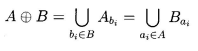
I created a function in julia to visualize this. It shows the original pixels as white (1.0), and the new pixels added by dilation as light gray (0.7).
You can see how the shape has grown outwards in all directions.
Even the small noise specks have grown into bigger blobs.
All holes have been filled.
| Original Image | Dilation with Square SE |
|---|---|
| 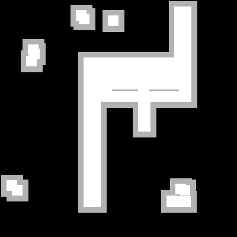 |
Original Image vs Dilated image with a Square SE
Here’s the Julia code that implements this:
function do_dilate_float(img::BitMatrix, se::BitMatrix = trues(3, 3))
img_rows, img_cols = size(img)
se_rows, se_cols = size(se)
out_img = Float64.(img)
center_r = (se_rows + 1) ÷ 2
center_c = (se_cols + 1) ÷ 2
for r in 1:img_rows
for c in 1:img_cols
if img[r, c]
for sr in 1:se_rows
for sc in 1:se_cols
if se[sr, sc]
out_r = r + sr - center_r
out_c = c + sc - center_c
if 1 <= out_r <= img_rows && 1 <= out_c <= img_cols
if out_img[out_r, out_c] == 0.0
out_img[out_r, out_c] = 0.7
end
end
end
end
end
end
end
end
return out_img
endWe can control the growth by changing the shape of our SE.
| Dilation with Square SE | Dilation with Diamond SE |
|---|---|
Comparing a 3x3 square SE to a 3x3 diamond SE. Notice the difference in the corners.
The diamond SE only expands up, down, left, and right, not diagonally.Here, are the images without the light gray part.
| Original Image | Dilation with Square SE | Dilation with Diamond SE |
|---|---|---|
| 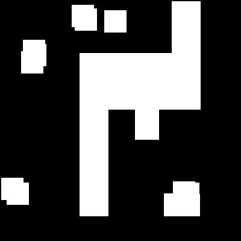 | 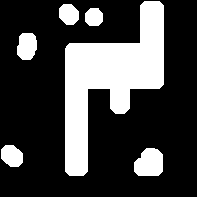 |
Original vs Square SE vs Diamond SE
Erosion
Erosion is the opposite of dilation. Here, we slide our SE over the image. We only keep a pixel in our final image if the entire SE, when centered on that pixel, fits perfectly inside the original shape. This process erodes the boundaries of objects and, completely removes any shapes smaller than the SE. In many applications, it is known that objects of interest are of size greater than small noises [1]. This is helpful in removing small noises.
The visualization below for erosion keeps the pixels that survived as white (1.0) and shows the pixels that were removed as dark gray (0.2).
| Original Image | Erosion with Square SE |
|---|---|
| 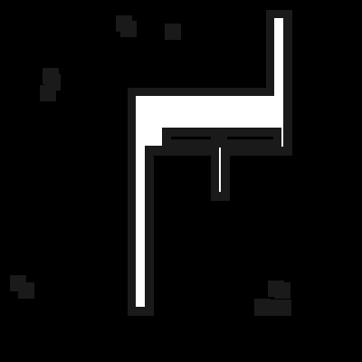 |
Original Image vs Eroded image with a Square SE
Notice how the noises at the top and bottom has vanished, and the main shape has shrunk.
Again, Here’s the Julia code that implements this:
function do_erode_float(img::BitMatrix, se::BitMatrix = trues(3, 3))
img_rows, img_cols = size(img)
surviving_pixels = do_erode(img, se)
out_img = Float64.(img)
for r in 1:img_rows
for c in 1:img_cols
if img[r, c] && !surviving_pixels[r, c]
out_img[r, c] = 0.1
end
end
end
return out_img
end
Applications of morphological operations
Erosion and dilation can be used in a variety of ways, in parallel and series, to give other transformations including thickening, thinning, skeletonisation. For example, an erosion followed by a dilation with the same SE will remove all pixels in regions which are too small to contain the SE. This is called Opening. The opposite sequence, a dilation followed by am erosion, will fill all holes smaller than the SE. This is called Closing. Here are some visualization on how Closing and Opening works with square SE.
| Original Image | Opening | Closing |
|---|---|---|
| 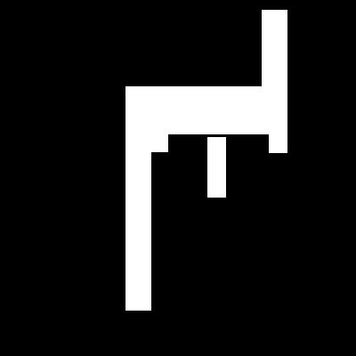 | 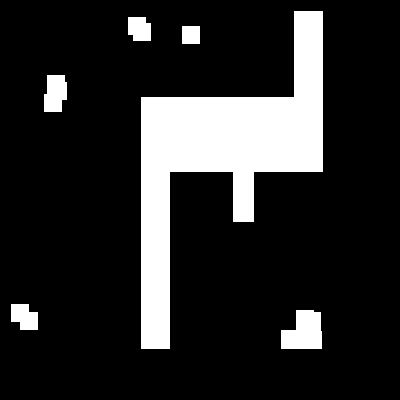 |
Original Image vs Opened Image vs Closed Image
These two operations, Opening and Closing, form the basis of our image cleaning pipeline before we even attempt to recognize characters.
A Note on Duality
There's an interesting property here.
Dilation and erosion are duals.
In simple terms, this means that eroding an object is the same as
dilating the background around it.
Formally,
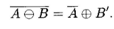
The OCR Pipeline
We now have everything we need: Dilation, Erosion and their combinations: Opening and Closing. But, how do we get from here to finding a letter, like an 'A'? The logic is surprisingly simple and elegant. Let us walk through each step one by one.
Step 1: Creating the Character Probe
Our goal is to find all the shapes in our main image that look like the letter 'A'. The first step is to create our template, which we will call as "probe" or "model". We will shrink our image A. Why? Because this shrunken probe needs to fit comfortably inside any 'A' we find, even if that 'A' is slightly distorted, rotated, or has some noise on its edges. By repeatedly eroding our clean template 'A', we create this smaller, more shrunken probe.
| Original 'A' Template | Shrunken 'A' Probe |
|---|---|
| 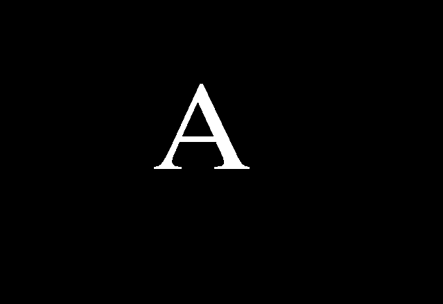 | 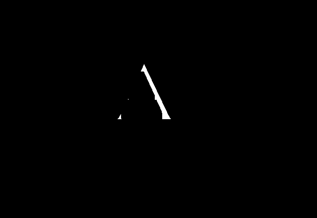 |
On the left is our clean template. On the right is the probe, created by eroding the template four times with a 3x3 square SE.
Step 2: Cleaning the Target Image
Any real world documents are not completely noise free. There will be some noises which we have to remove. We call them "salt" and "pepper" noise. This is the perfect job for an Opening operation (an erosion followed by a dilation). The erosion will remove the small salt noise, and the dilation will restore the characters their original size.
| Original Test Image | Opened Image (Cleaned) |
|---|---|
| 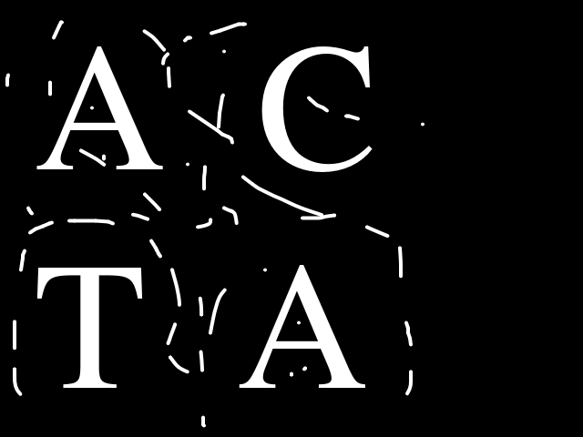 | 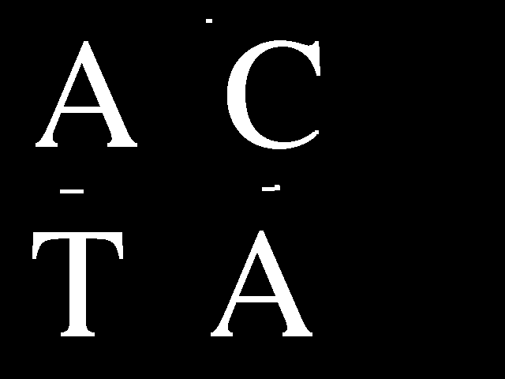 |
Left: Test Image. Right: Cleaned Test Image. As you can see, Most of the noises in the original image has been removed.
Step 3: Erosion with the Probe
We take our cleaned image and erode it, but this time,
we use our shrunken A probe as the
structuring element.
Think about what we did back in erosion.
A pixel in the output image will be white `(true)`
if and only if the entire shape of our probe (SE)
can fit perfectly at that location.
This single erosion operation will leave a "hit" everywhere
it finds a shape that is big enough to contain our 'A' probe.
This is purely geometric template matching!
Look at our erosion result:
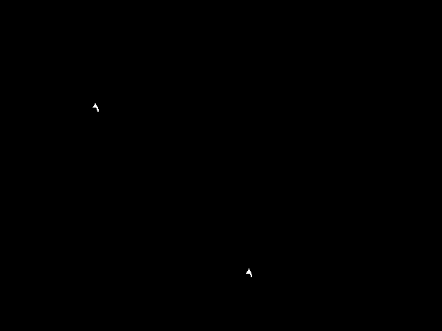
The white pixels are "hits" where our 'A' probe fit
perfectly inside a shape.
Step 4: Connected Components Analysis
The erosion result is great, but, the output image is not a single pixel showing where A is. It's a scattering of pixels. There are a small blob of several "hit" pixels together. Now, what we need to do is, Count these together blobs as one detection. This provides the position of each recognized instance of A in the image.
This is where the Connected Components Analysis
comes in. This algorithm scans an image and gives every separate,
contiguous group of pixels a unique integer label.
There are two algorithms for it: Recursive Algorithm
and Sequential Algorithm.
Here, is the code for doing Sequential Connected Components Algorithm
using 4-connectivity.
function do_connected_components_labeling(img::BitMatrix)
## Get size of input image
rows, cols = size(img)
## Create a empty canvas for labeling
labeled_image = zeros(Int, rows, cols)
## next label value which gets incremented after every labeling
next_label = 1
## Equivalance Table
equivalences = Dict{Int, Int}()
## Pass 1
## Check for upper and left pixel
for i in axes(img, 1), j in axes(img, 2)
if img[i, j]
## Check if pixel above or left exists
upper_label = i > 1 ? labeled_image[i-1, j] : 0
left_label = j > 1 ? labeled_image[i, j-1] : 0
## If both upper and left pixel have no labels, give new label to current pixel
if upper_label == 0 && left_label == 0
labeled_image[i, j] = next_label
next_label += 1
## If upper pixel have a label and left pixel does not, give upper label to current pixel
elseif upper_label != 0 && left_label == 0
labeled_image[i, j] = upper_label
## If upper pixel does not have a label and left pixel have a label, give the left label to current pixel
elseif upper_label == 0 && left_label != 0
labeled_image[i, j] = left_label
## If both upper and left pixels have label
elseif upper_label != 0 && left_label != 0
## If both upper and left pixels have same label, give the label to the current pixel
if upper_label == left_label
labeled_image[i, j] = upper_label
## Else, give minimum label number to the current pixel and put both upper and left label in equivalence table
## This indicates that both the upper and left label are connected and one single object
else
labeled_image[i, j] = min(upper_label, left_label)
equivalences[max(upper_label, left_label)] = min(upper_label, left_label)
end
end
end
end
## Pass 2
## Loop through every key in equivalence table
for label in keys(equivalences)
## Get the value and find the root label by following the chain
root = equivalences[label]
while haskey(equivalences, root)
root = equivalences[root]
end
## Update the equivalence table with the final root to compress paths
equivalences[label] = root
end
## Create final labeled image by replacing all equivalent labels with their root labels
final_labeled_image = zeros(Int, rows, cols)
## Loop through every pixel in the labeled image
for i in axes(labeled_image, 1), j in axes(labeled_image, 2)
current_label = labeled_image[i, j]
## If pixel has a label (not background)
if current_label != 0
## Replace with root label if it exists in equivalences, otherwise keep original
final_labeled_image[i, j] = get(equivalences, current_label, current_label)
end
end
return final_labeled_image
end
Step 5: Filtering and Finding the final Coordinates
We have now got a labeled list of objects. Two steps remain:
At first, we can apply a size filter if we want. Some of our "hits" might be tiny, just one or two pixels. These are maybe false positives where the probe accidentally fit into some noise. We can remove the objects which are small by counting the number of pixels in the object and use a threshold to remove those objects.
Secondly, If the remaining objects survived the size filter, we can calculate the center of mass of the object. This gives us a single(x, y) coordinate for each character we've successfully recognized.
Here, is the code for our size filter.
function do_filter_components_by_size(labeled_image::Matrix{Int}; min_size::Int=1, max_size::Int=typemax(Int))
## Count how many pixels each label has (area of each component)
component_areas = countmap(labeled_image)
## Remove background label (0) from area counts since we don't want to filter it
delete!(component_areas, 0)
## Initialize set to store labels of components that meet size criteria
labels_to_keep = Set{Int}()
## Check each component's area against size thresholds
for (label, area) in component_areas
## If component size is within specified range, mark it for keeping
if area >= min_size && area <= max_size
push!(labels_to_keep, label)
end
end
## Create filtered image where only components meeting size criteria are kept
## All other components are set to 0 (background)
filtered_image = map(label -> (label in labels_to_keep) ? label : 0, labeled_image)
return filtered_image
end
And, we are done. Connect all the above steps one by one
and we have got the OCR pipeline.
Here, is the full pipeline code:
function do_ocr(
test_image::BitMatrix,
template_img::BitMatrix;
erosion_amount::Int = 4,
min_hit_size::Int = 1
)
rows_templ, cols_templ = size(template_img)
if !isodd(rows_templ) || !isodd(cols_templ)
throw(ArgumentError("Template image dimensions must be odd to have a clear center pixel."))
end
probe = copy(template_img)
se_shrinking = trues(3, 3)
for _ in 1:erosion_amount
probe = do_erode(probe, se_shrinking)
end
cleaned_test_image = do_opening(test_image)
erosion_result = do_erode(cleaned_test_image, probe)
labeled_hits = do_connected_components_labeling(binary_erosion_result)
filtered_hits = do_filter_components_by_size(labeled_hits, min_size=1)
unique_labels = filter(l -> l != 0, unique(filtered_hits))
detected_locations = []
for label in unique_labels
component_mask = (filtered_hits .== label)
rows, cols = size(component_mask)
i_coords = getindex.(CartesianIndices(component_mask), 1)
j_coords = getindex.(CartesianIndices(component_mask), 2)
area = sum(component_mask)
if area > 0
j_bar = sum(component_mask .* j_coords) / area
i_bar = sum(component_mask .* i_coords) / area
push!(detected_locations, (round(Int, j_bar), round(Int, i_bar)))
end
end
return erosion_result, detected_locations
endI have also uploaded the code on GitHub.
Conclusion
And, finally, we wrote a OCR from Scratch without any neural networks. It was fun and i was shocked how the basic geometrical principles were so useful.
There are some problems though. This works perfectly only when
the characters in our test image are very similar in font and size to
our original template.
If the font changes, or if the text size is drastically different
than the template, our probe will fail to fit inside the target
characters and the model fails.
Example:
| Original Test Image | Found Instances |
|---|---|
| 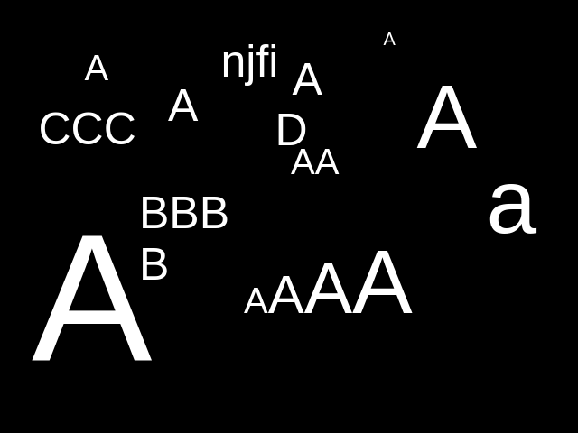 | 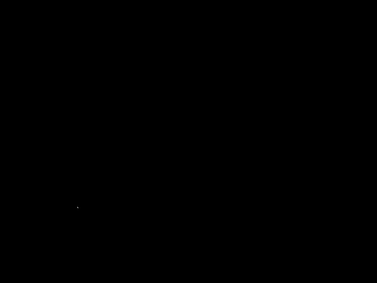 |
Left: Test Image. Right: Found Instances. As you can see, The small As have been ignored.
Our OCR pipeline found 2 instances, not one. If you don't believe me, i would like you to zoom the second image above. There are two pixels, one at (132, 352) and another at (133, 353). This is because I kept the size filter at minimum (1) and if we increase the size filter even by one, there would be zero instances of A.
There is also a problem of Omnifont Recognition and it has historically been a very difficult problem for classical computer vision techniques.
This is precisely where modern techniques like Convolutional Neural Networks (CNNs) are much better. Instead of being explicitly programmed with a rigid geometric template, a CNN learns the features by itself trained on thousands of examples. This is much better than a morphological model for OCR.
Conclusion: It was fun.
References
[1] Look at Size Filter, Chapter-2 (Binary Image Processing), Machine Vision, 1995
Computer Vision IT412, Robert Owens, 1998 (LINK)